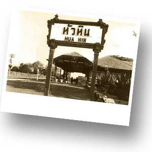
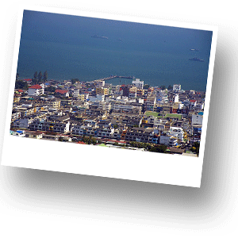

История Хуа Хина

Название города «Хуа Хин» в переводе означает «каменная голова» или же «голова слона». Город находится на западном побережье Сиамского залива, примерно в 200 километрах от Бангкока, туда можно добраться на поезде, на автобусе, на такси и на личном автомобиле. Дорога в Хуа Хин из Бангкока на автомобиле займет примерно два с половиной - три часа, на поезде – четыре часа.
Хуа Хин является одним из самых старых курортов Таиланда, обращенный своей историей к 1920-м годам – время правления Короля Рамы VI. Хотя есть факты, которые говорят о том, что интерес к Хуа Хину, как к курорту был проявлен Королем Рамой IV гораздо раньше. В 1868 году Король Рама IV, направился в место, которое называлось Хао Сам Рой Йот (город Прачуапкхирикхан), располагающееся к югу от Хуа Хина, чтобы понаблюдать там за солнечным затмением. Его сопровождали несколько европейских гостей и они были под очень большим впечатлением от местных пейзажей. Американские миссионеры базировались тогда в Петчабури – очень важном провинциальном городе, который находится в 60-ти километрах от Хуа Хина, им очень понравилась здешняя природная красота и они начали строить на берегу первые бунгало.
В начале XX-го века на юге стали строить железную дорогу, а 25 ноября 1911 года была торжественно открыта новая станция Хуа Хин. Место со временем стало доступным, и сын Короля Рама V построил на берегу собственную летнюю резиденцию, дав имя курорту Хуа Хин. Железная дорога сделала город легкодоступным и, спустя некоторое время, в город устремилась оставшаяся Королевская семья. В 1921 Король Рама VI построил на берегу огромный дворец - Марукхатайван, а после его приемник Король Рама VII, последовал моде, и пристроил рядом свою резиденцию, дав ей имя Клаи Кхангвон, что значит «в дали от забот и беспокойства». Нынешний король Рама IX использует этот комплекс, как свою летнюю резиденцию.
Железная дорога стала причиной нахлынувшего потока отдыхающих, которые искали уединенные места для отдыха. В 1923 году был открыта первая железнодорожная гостиница, построенная в эдвардианском колониальном стиле с большими комнатами и щедрым использованием тикового дерева. Обслуживание было на высшем уровне с первого дня существования гостиницы. На сегодняшний день эта гостиница сохранена и является одной из лучших гостиниц Хуа Хина – "Sofitel Grand Centara" («Софитель»). Когда в 1924 году открылся королевский гольф-клуб, то Хуа Хин получил твердую репутацию «морского курорта Сиама», где отдыхающие могли не только ловить рыбу и плавать, но и играть на первом поле страны в гольф. Это название установило атмосферу, стиль и символ Хуа Хина, как знаменитого гольф-курорта Таиланда. Любители этой игры со всего мира по достоинству оценили местные поля для игры на прекрасных ландшафтах тропической зелени. Сегодня в Хуа Хине насчитывается порядка восьми современных гольф-полей.
Во время Второй Мировой войны, а также в 70-х годах, когда пальму первенства у Хуа Хина переняла, расположеннная на противоположном берегу Сиамского залива Паттайа, Хуа Хин несколько потерял свою популярность среди гостей. В 80-х годах новое поколение открыло для себя Хуа Хин, и несколько домов отдыха были построены вдоль берега для того, чтобы присоединиться к старым прибрежным бунгало. Знаменитый архитектор из Бангкока, который разработал и построил первый кондоминиум в Хуа Хин, вдохнул в старую железнодорожную гостиницу новую жизнь. После того как на экраны вышел фильм «The Killing Fields», курорт Хуа Хин родился заново. Хуа Хин координальным образом отличается от всех морских курортов Таиланда. В отличие от Паттайи или Пхукета, Хуа Хин никогда не пытался стать современным или международным. Курорт находится в центре Таиланда, его быстрое развитие и рост предназначалось в первую очередь для местной аристократии и элиты общества, а потом уже только для туризма. Хуа Хин покоряет сердца туристов своим обаянием и элегантностью, прекрасно сочетающимися с современным комфортом. В Хуа Хине круглый год большое количество отдыхающих европейцев и состоятельных жителей Королевства. Это уже давно доказано большим количеством людей, отдыхающими здесь почти круглый год.